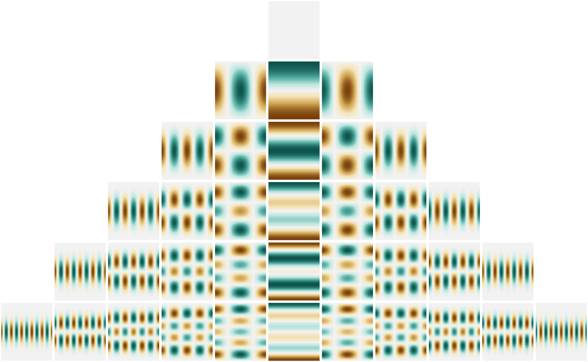

library(cubs)
library(ggplot2)
library(dplyr)
library(tidyr)
library(purrr)
library(glue)Associated Legendre polynomials
pars <- rowwise(data.frame(l=0:5)) %>% mutate(m = list(seq(0, l))) %>% unnest(cols = c(m))
leg <- rowwise(pars) %>% mutate(theta=list(seq(0,pi,length=180)), value = list(cubs::gammalm(l,m)*Plm(l,m,theta))) %>% unnest(cols = c(theta,value))
ggplot(leg, aes(theta, value, colour=factor(m))) +
facet_wrap(~l,scales = 'free') +
geom_line()
g <- expand.grid(phi=seq(0,2*pi,length=360), theta=seq(0,pi,length=180))
pars <- rowwise(data.frame(l=0:5)) %>% mutate(m = list(seq(-l, l))) %>% unnest(cols = c(m))
test <- rowwise(pars) %>% mutate(Y = list(Ylm(l,m,g$phi,g$theta)),
data=list(data.frame(Yn=Re(Y)/max(Re(Y)), g)))
glimpse(test)## Rows: 36
## Columns: 4
## $ l <int> 0, 1, 1, 1, 2, 2, 2, 2, 2, 3, 3, 3, 3, 3, 3, 3, 4, 4, 4, 4, 4, 4…
## $ m <int> 0, -1, 0, 1, -2, -1, 0, 1, 2, -3, -2, -1, 0, 1, 2, 3, -4, -3, -2…
## $ Y <list> [<0.2820948+0i, 0.2820948+0i, 0.2820948+0i, 0.2820948+0i, 0.282…
## $ data <list> [<data.frame[64800 x 3]>, <data.frame[64800 x 3]>, <data.frame[…plot_ylm <- function(l,m,data,...){
p <- ggplot(data, aes(phi,theta,fill=Yn)) +
geom_raster() +
scale_fill_distiller(palette = 'BrBG') +
theme_void() +
scale_x_continuous(expand = c(0,0)) +
scale_y_continuous(expand = c(0,0)) +
theme(legend.position = 'none',
plot.background = element_blank(),
panel.border = element_blank(),
panel.background = element_blank(),
plot.margin = margin(1,1,1,1)) +
labs(x=NULL, y='wtf', title=NULL)
p
}
all <- rowwise(test) %>% pmap(plot_ylm)
lmax = max(pars$l)
pmax = 2*(lmax)+1
m <- matrix(NA,lmax+1,pmax)
# (row(m) > (lmax - col(m) + 1))
# (row(m) > (col(m) - lmax -1))
# hm <- (row(m) > (lmax - col(m) + 1)) & (row(m) > (col(m) - lmax -1))
ind <- which((row(m) > (lmax - col(m) + 1)) & (row(m) > (col(m) - lmax -1)), arr.ind = TRUE)
ind <- ind[order(ind[,1],ind[,2]),]
m[ind] <- seq(1,nrow(ind))
gridExtra::grid.arrange(grobs=all, layout_matrix=m)